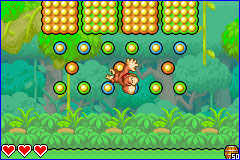
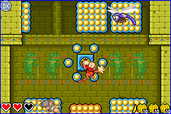

種類あるゲームモードのうち、まずはアドベンチャーを選択。任務は各所に散ったメダルを回収することなのですが、そのためにはドンキーを操ってステージを首尾よくクリアーしなければなりません。この、バラエティ溢れる盛りだくさんのステージを！

ステージにはドンキーがつかまる“トッテ”が沢山あって、ひょいっとジャンプして、まずこのトッテにぶら下がります。するとドンキーが右へ左へぶらぶらと揺れます。その揺れの反動を使って、あっちへヒョイ・こっちへヒョイヒョイと移動していくのです。イメージとしては、サーカスの空中ブランコにも似てるかな？ いや、このぶらぶら具合、そして飛び移り方、おサルさんが木々の間をヒョイヒョイと飛び移るのに似ています。さすがはサル科…そういえばドンキーってゴリラでサルの仲間だもんなーと(いや、サルそのものではありませんが)。

対戦モード『ジャングルピック』もかなり作り込んであって、おなじみのディディーコングやディクシーコングなど、それぞれの特性を活かした遊びができるのがポイント。こちらは仲間とタイムを競うステージで、アドベンチャーとは全く違った盛り上がりを見せること間違いなしです。
|